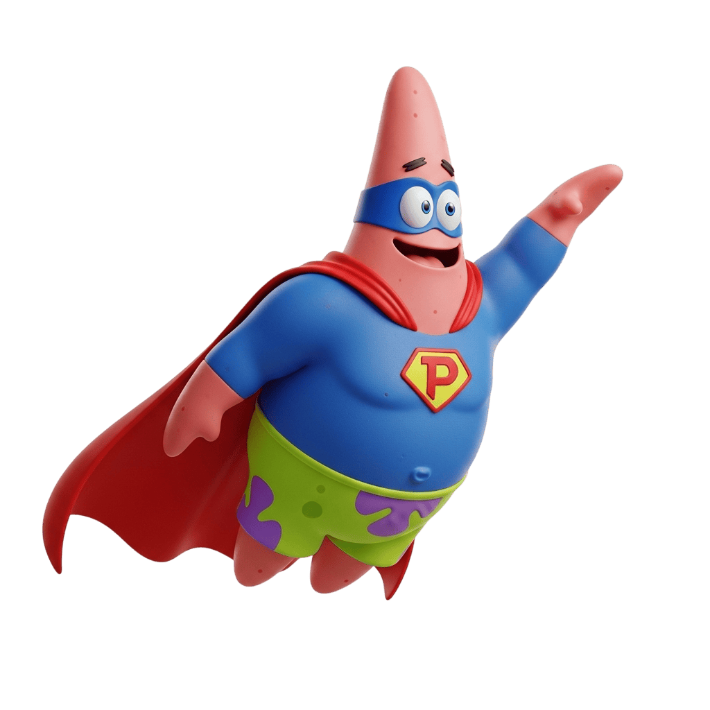

essCert Automation Suite
Spearheaded the shift from fully manual testing to automation by building a Playwright end-to-end suite from scratch. Reduced manual testing effort by 50%.
✓ Open to work · South Australia · QA Engineer
Quality Assurance Engineer
I partner with teams to ship reliable software. I design thorough test strategies, build automation frameworks, and catch defects before users do.
expect(candidate).toPass()
expect(background).toBeSolid()

I'm a Quality Assurance Engineer with 4+ years in software testing and 15+ years across IT. I sign off releases, structure test plans and documentation, and standardise release processes to keep critical defects out of production.
At ICE Data Services I pioneered automation for a fully manual team. I built a Playwright suite that halved manual testing effort, then rewrote it in Cypress mid-project when the app was rebuilt on a modern React framework, all without losing coverage. I champion clear bug reporting, repeatable process, and fast onboarding for new engineers.
expect(stack).toBeBattleTested()
expect(experience).toBeProven()
expect(work).toShipReliably()
Spearheaded the shift from fully manual testing to automation by building a Playwright end-to-end suite from scratch. Reduced manual testing effort by 50%.
Re-engineered the entire automation suite mid-project after a framework change. Preserved full test coverage while the application was rebuilt on a modern stack.
Acted as the final QA sign-off, gating releases behind a standardised pre-release checklist and smoke tests on Jenkins/Git for zero critical incidents across 12 releases. Established a single source of truth with scenarios in Confluence and cases in ALM.
Built a reusable Playwright end-to-end testing framework with the Page Object Model, typed fixtures, and environment-based configuration, structured to read clearly and extend easily.
Developed a Cypress testing framework covering end-to-end and component tests, with custom commands, typed environment config, and CI-ready project structure.
Designed and built this dependency-free portfolio with plain HTML, CSS, and JavaScript, hosted on GitHub Pages. Added a light and dark theme and a toggleable, test-runner themed QA mode.
expect(certs).toBeOnRecord()
expect(degree).toExist()
expect(reply).toBeReceived()
Open to QA opportunities and collaborations.
Send me a message below or reach me by email.
or email me directly at pvictoriano@pm.me